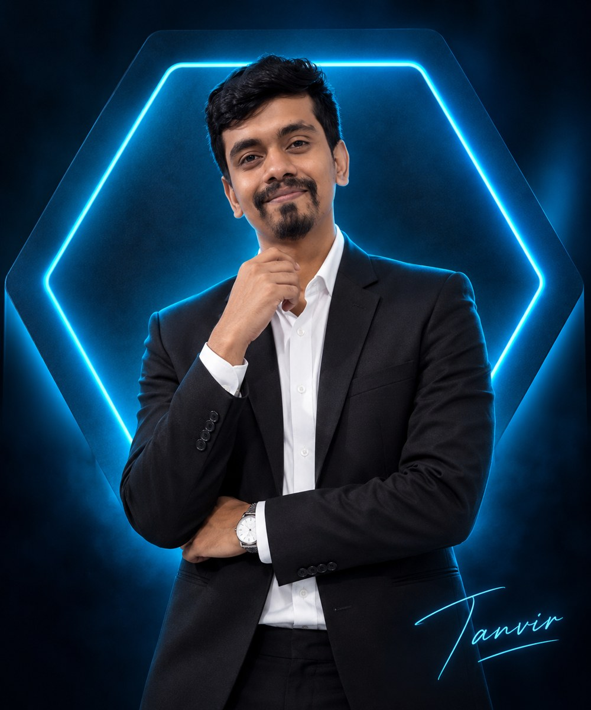

ELECTRICAL & ELECTRONICS ENGINEERHello, It's Me
Hello, It's Me
Tanberul Islam
I'm an Electrical Engineer
Industrial electrical maintenance professional with 6+ years of experience in preventive maintenance, ERP operations, motor systems and engineering documentation. Focused on control systems, energy efficiency and practical engineering solutions.

GET TO KNOW ME
About Me
Electrical & Electronics Engineer
With 6+ years of industrial experience, I work with electrical maintenance, preventive maintenance planning, ERP operations, motors and engineering documentation. I completed my BSc in EEE with CGPA 3.59 and researched FOC-based induction motor control using MATLAB/Simulink.
Let's ConnectEngineering Skills
Electrical MaintenanceInduction MotorsFOC / SVPWMMATLAB / SimulinkPLC FundamentalsMotor ProtectionAutoCAD ElectricalERP Operations3-Phase PowerPreventive MaintenanceTechnical DocumentationEnergy Optimization
Work Experience
Assistant Executive — Engineering
Four H Fashion Ltd. | Four H Group, Chittagong
Industrial electrical maintenance, preventive maintenance schedules, ERP central electrical store operations for 500+ line items, troubleshooting, AC and motor monitoring, cross-department coordination and technical documentation.
Technical Blogger
CircuitSecrets
Creating practical content on electrical engineering, motors, calculators, tools and technology for learners and working professionals.
Engineering Projects
◉
FOC Induction Motor
MATLAB / Simulink · Thesis
View Details ↗▦
EEE Calculator Tools
HTML / CSS / JavaScript
Visit Blog ↗⌁
Motor & Cable Tools
Engineering Calculations
Discuss ↗▤
Motor Protection
Control Circuits
Discuss ↗▣
CircuitSecrets
Technical Blog
Read Blog ↗◈
Portfolio UI
Personal Branding
Back Home ↗RESEARCH HIGHLIGHT
My Thesis
Efficiency Improvement of an Induction Motor Using Advanced Control Techniques
Research project using MATLAB/Simulink to study indirect field-oriented control, flux and torque decoupling, transient performance, torque response and SVPWM-based inverter control.
View CV & Research ↗FOCSVPWMIM
Case Studies
Identify an engineering challenge, operating condition or research objective.
Explain the tools, calculations, simulation model, troubleshooting or maintenance approach used.
Present verified observations, lessons learned and practical engineering implications.
Education
BSc in Electrical & Electronics Engineering
Southern University Bangladesh · CGPA 3.59
Diploma in Electrical Engineering
Chittagong Polytechnic Institute · CGPA 3.06
Certifications & Licenses
City & Guilds London Level 2
BKTTC · Electrical & Electronics Engineering
RAC Level 1
Refrigeration & Air Conditioning
Training
Industrial Training
Electrical Systems · Eastern Cables Ltd.
Resume & CV
Mohammad Tanberul Islam
Electrical & Electronics Engineer with industrial experience in electrical maintenance, preventive maintenance planning, ERP-based operations, motor systems and MATLAB/Simulink research.
Professional FocusElectrical Power Systems, Industrial Automation, Control Systems, PLC/SCADA and energy efficiency.
EducationBSc in EEE, Southern University Bangladesh — CGPA 3.59.
ResearchInduction motor efficiency improvement using FOC in MATLAB/Simulink.
LocationChittagong, Bangladesh.
Full CV Preview · Scroll inside the document
Contact Me!
Have an engineering project, collaboration idea or professional opportunity? Send me a message.